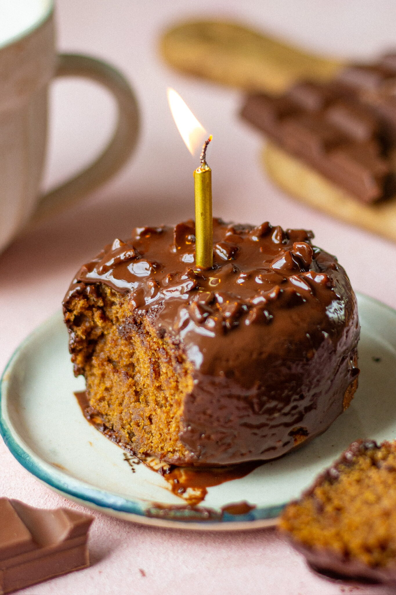

ATTA COFFEE CAKE
Prep Time: 45 minutes
Cook Time: 30 minutes
Total Time: 75 minutes
Ingredients:
- 2 tbsp milk
- 1 tsp coffee
- 2 tbsp yoghurt
- ⅛ tsp baking soda
- 2 tbsp oil
- 3 tbsp jaggery powder
- ½ tsp vanilla extract
- 6 tbsp whole wheat flour
- ¼ tsp baking powder
- Chocolate glaze
- ½ cup dark chocolate chips
- 2 tbsp oil
- 8-10 chopped walnuts

Instructions:
- Grease a 3 inch saucepan and keep aside.
- In a bowl whisk together milk and coffee.
- Into this add yoghurt, baking soda, jaggery, oil and vanilla essence and give it a mix.
- Sift in atta and baking powder and combine it with wet ingredients gently.
- Pour the batter in the saucepan and put it on the induction on lowest heat possible. Cover it with the plate and bake it for 20-25 minutes till a skewer comes clean.
- For the glaze- melt the chocolate and combine oil in it. Add chopped walnuts and your glaze is ready.
- Wait for the cake to come at the room temperature and then decorate it with the nut glaze.
Source: Bake with Shivesh